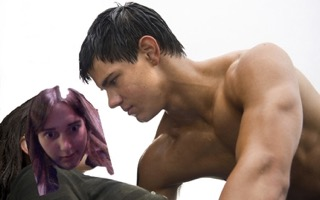

Welcome to Nika Perdika Art and Sculpture, a company founded in 2010 by the talented artist and entrepreneur Nicole Turkey. At Nika Perdika, our passion is to create unique and one-of-a-kind art and sculpture that embodies the beauty and complexity of the world around us.
Our founder, Nicole Turkey, is a skilled artist who has spent years honing her craft and developing her own distinctive style. Her work has been featured in galleries and exhibitions around the world, and she has received numerous awards and accolades for her contributions to the art world.
At Nika Perdika, we are committed to creating pieces that are not only beautiful, but also meaningful. Whether you're looking for a stunning sculpture to add to your home or office, or a custom piece that captures the essence of a special moment or memory, we can work with you to create a piece that truly speaks to your heart.
Our team of talented artists and designers are dedicated to bringing your vision to life. We use a variety of materials and techniques to create our pieces, including bronze, stone, wood, and more. Each piece is meticulously crafted to ensure that it meets our high standards of quality and excellence.
Thank you for visiting Nika Perdika Art and Sculpture. We invite you to explore our collection and discover the beauty and wonder of our art and sculpture.